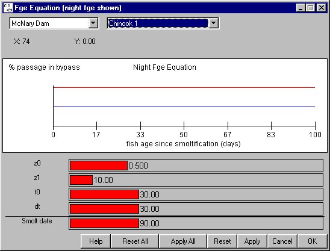

FGE Equation: Time Varying FGE
Selecting Dam FGE Equation opens a window for setting parameters for time varying fge which differs from constant fge set in the FGE window. In order to execute a model run using the time varying fge condition, you must turn on age dependent fge (RunRuntime Settings). When the model is run under this condition, day and night fge change randomly for each dam time interval (6 hours) according to probability distributions that change with fish age and reservoir elevation. Variations in fge from the initial condition depends on Julian day, the day since the onset of smoltification, set in the Release Tool window, and reservoir elevation for each day, set in the Elevation window. The FGE Equation window displays the values for night fge only; however, both day and night values are calculated using the parameters set in this equation window as well as the mean, low and high fge values set in the FGE window. The difference between day and night fge is determined by the sliders describing the probability distribution in the FGE window. Changes applied to the probability distribution will automatically update the display in the FGE Equation window. In the FGE Equation window, mean fge is depicted as a red line and the blues lines designate the low and high values. Fge is plotted against fish age relative to the onset of smoltification. To coordinate effects of age dependent behavioral factors in fge and the seasonal dependent reservoir level factor, you must select the Julian day of the onset of smoltification. The fge submodel parameters are as follows:
FGE Equation opens a window for setting parameters for time varying fge which differs from constant fge set in the FGE window. In order to execute a model run using the time varying fge condition, you must turn on age dependent fge (RunRuntime Settings). When the model is run under this condition, day and night fge change randomly for each dam time interval (6 hours) according to probability distributions that change with fish age and reservoir elevation. Variations in fge from the initial condition depends on Julian day, the day since the onset of smoltification, set in the Release Tool window, and reservoir elevation for each day, set in the Elevation window. The FGE Equation window displays the values for night fge only; however, both day and night values are calculated using the parameters set in this equation window as well as the mean, low and high fge values set in the FGE window. The difference between day and night fge is determined by the sliders describing the probability distribution in the FGE window. Changes applied to the probability distribution will automatically update the display in the FGE Equation window. In the FGE Equation window, mean fge is depicted as a red line and the blues lines designate the low and high values. Fge is plotted against fish age relative to the onset of smoltification. To coordinate effects of age dependent behavioral factors in fge and the seasonal dependent reservoir level factor, you must select the Julian day of the onset of smoltification. The fge submodel parameters are as follows:
- z0: Fish forebay depth at age (t0) where fish passage behavior starts changing.
- z1: Fish forebay depth at age (t0 + dt) where fish passage behavior stops changing.
- t0: Fish age since the onset of smoltification at which fish passage behavior starts changing.
- dt: Time interval over which fge changes due to fish behavior.
- Smolt date (display only): Julian day for onset of smoltification. Smoltification onset day is set with the Release Tool.
This is an Equation Input window.

Night Fge Equation window.